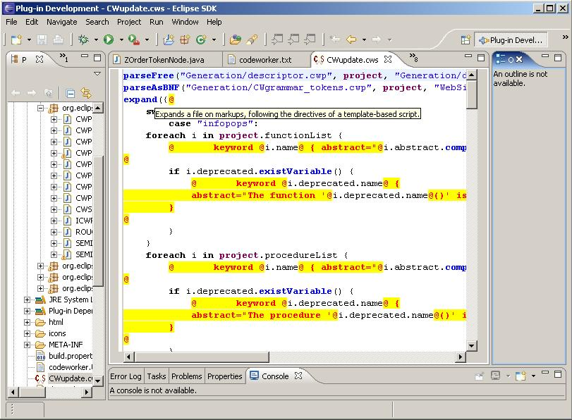

|
Integration with Eclipse
|
What is Eclipse?
" is an open source community
whose projects are focused on providing an extensible development platform and application frameworks
for building software. Eclipse provides extensible tools and frameworks that span the software development
lifecycle, including support for modeling, language development environments for Java, C/C++ and others,
testing and performance, business intelligence, rich client applications and embedded development. A large,
vibrant ecosystem of major technology vendors, innovative start-ups, universities and research institutions
and individuals extend, complement and support the Eclipse Platform."
CodeWorker's plugin
A common way of extending Eclipse is to add plugins. An Eclipse plugin now exists for CodeWorker's script.
Presentation
This first delivery provides editors with syntax coloring, for each kind of CodeWorker's scripts. Here are
the recognized file extensions:
- ".cws": common gluing script, neither specialized to parsing nor code generation
- ".cwp": extended-BNF or translation scripts (generally called from built-in procedures
parseAsBNF() or translate())
- ".cwt": template-based script, intended to code generation
- ".gen" (deprecated): old CodeWorker's extension; note a fundamental limitation: for
a valid coloring, a template-based script should start with @ or <%
Main functionality of the editor:
- syntax highlighting
- text hover over built-in functions
- integrated documentation (accessible from the general "Help Contents" menu topic)
- reference manual
- tutorial
- execution of scripts
- reports of execution
User's manual of the plugin is accessible from the menu item "Help/Help Contents".
Installation
First of all, you must have installed Eclipse 3.1.1
or higher. If it is the first time for you, start by downloading the Eclipse SDK. Follow their
directives to set it up properly onto your platform.
You will need a Java runtime environment (JRE)
to use Eclipse. CodeWorker's plugin cannot run under Java versions older than 5.0. So, please check that
you are running under JRE 5.0 or higher.
Once these prerequisites have been correctly performed, you have to download the CodeWorker's plugin
org.eclipse.codeworker.zip. This archive has to
be extracted into the root directory you have chosen for the Eclipse installation. Example (Windows path):
"C:\Eclipse".
Now, you can launch Eclipse. CodeWorker's scripts will be recognized and highlighted.
Screenshot
